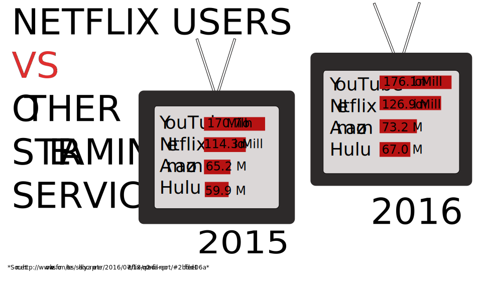

The Story Behind Netflix's
As the Online Streaming Service Grows in Content and Membership
By Ramona Roberts
Netflix’s has been one of the fastest growing online streaming services to date! With its membership subscriptions growing per quarter, and popularity increasing, the streaming service seems that it’s not slowing down. Most great stories start from the bottom and work their way up, and the story behind Netflix is no different.
CEO and founder Reed Hastings, started off Netflix as a DVD-by-mail rental service back in 1997 with Marc Randolph. Hasting explains the idea of Netflix came from late fee of $40 from an overdue rental from blockbuster. Netflix later attempted to sell a portion of the company to Blockbuster, but they denied the offer. Fast forward time, Blockbuster is out of service and Netflix is one of the top streaming services providing over 100 million hours of content.

Netflix was originally known for accessing your favorite TV show or maybe an old movie. However their original content has grown to be the star focus of its members. Their first original show, House of Cards , has remained popular amongst viewers and has released 4 seasons. The game changer however was the first season of the hit show Orange is the New Black . The show and the characters received so much press and positive feedback that impacted Netflix’s subscriptions indefinitely. In entering to its fourth season, the show hasn’t lost its buzz. Netflix has continued to create more and more original shows, documentaries, and movies. These visuals have featured some of our favorite actors to seeing new faces.

Fuller house is one of Netflix’s new original shows, bringing a modern part 2 to the old hit show Full House that aired from 1987 to 1995. This show seems to be the show getting majority of views. However newer shows such as Marvel’s Luke Cage and Stranger Things have grabbed viewers’ attention as well.

TThe company has recently invested more money into original visual productions, as well as in house production of these visuals. Revenue for the company from both domestic and international streaming has increased consistently each quarter. Between December last year and March of this year, there has been a big increase in paid membership for domestic streaming specifically. Netflix is making it’s name in history by changing the age of watching TV.